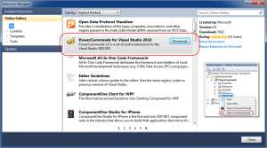

سفارشی سازی دکمه های اجرای سریع
 بعضی از مدل نوت بوک های شرکت اچ پی دارای دکمه های اجرای سریع (Quick lunch) در سمت چپ کیبورد همانند شکل هستند که بعضی اوقات مشکل آفرینه چون زمانی که مثلا می خواین دکمه ی کنترل رو فشار بدین به اشتباه ماشین جساب رو باز می کنین یا …
بعضی از مدل نوت بوک های شرکت اچ پی دارای دکمه های اجرای سریع (Quick lunch) در سمت چپ کیبورد همانند شکل هستند که بعضی اوقات مشکل آفرینه چون زمانی که مثلا می خواین دکمه ی کنترل رو فشار بدین به اشتباه ماشین جساب رو باز می کنین یا …
بازم چون مرجع فارسی برای جل این مشکل پیدا نکردم اینجا می ذارم تا شاید روزی یه نفر ازش استفاده کرد!
آرشیو دسته: آموزش
سعی می کنم هر چی بلدم و می تونم رو اینجا آموزش بدم
من چند وقت پیش پلاگین Visual Asist X رو روی ویژوال استودیوم نصب کرده بودم که بعد از تموم شدن مدت زمان آزمایشش پلاگین ReSharper رو تست کردم که اونو خیلی بهتر و قوی تر دیدم و Visual Asist X رو از روی سیستم حذف کردم. ولی هربار که ویژوال استودیو رو باز میکردم پیغام تمام شدن مدت زمان استفاده نمایش داده میشد که آزار دهنده بود و بعد از چند بار که از دستش خسته شدم دنبال یه روش برای حذف کردنش گشتم که به پلاگین های ویژوال استودیو تحت نام Extension Manager رسیدم. که برای دسترسی به اون طبق تصویر روبرو از منوی Tools گزینه Extension Manager رو انتخاب کنید
{kind=link}
توی این قسمت شما می تونید به پلاگین ها دسترسی داشته باشید و اونها رو غیرفعال و حذف کنید. درضمن می تونید پلاگین های جدید و کاربردی رو از سایت مایکروسافت دانلود کنید.
به دوستانی که از ویژوال استودیو استفاده می کنن پیشنهاد می کنم از پلاگین Resharper استفاده کنن و سرعت کدنویسیشونو بالا ببرن! همچنین پلاگین Visual Asist X هم خوبه ولی من ریشارپر رو پیشنهاد می کنم. در ضمن هر دوی اونها یه مدت آزمایشی دارن که بعد از اون ازکار می افتن!
خوش باشید…
- در شرکت با مسئولیت محدود تعداد شرکا حداقل 2 نفر و در شرکت سهامی خاص تعداد سهامداران حداقل 3 نفر می باشد.
- حداقل سرمایه برای ثبت شرکت با مسئولیت محدود و سهامی خاص یک میلیون ریال است.
- در شرکت سهامی خاص حداقل 35%سرمایه باید نقدا در یکی از شعب بانکها تودیع و گواهی مربوطه ارائه و 65% در تعهد سهامداران باشد . در شرکت با مسئولیت محدود با کل سرمایه تحویل مدیر عامل شرکت شده و مدیر عامل اقرار به دریافت نماید و ارائه گواهی بانکی دال بر انجام این امر ضرورت ندارد.

- انتخاب بازرس اصلی و علی البدل در شرکت سهام خاص اجباری ولی در شرکت با مسئولیت محدود اختیاری است.
- مدت مدیریت در شرکت سهامی خاص حداکثر دو سال می باشد که قابل تمدید است و در شرکت با مسئولیت محدود مدیران شرکت برای مدت نامحدود انتخاب می شوند و همچنین ممکن که مدتی برای مدیران در اساسنامه شرکت مقرر دارند.
- انتخاب روزنامه کثیر الانتشار در شرکت سهامی خاص برای درج آگهی های دعوت شرکت در سهامی خاص الزامی و در شرکت با مسئولیت محدود اختیاری است.
- شرایط احراز حد نصاب در مجامع عمومی در شرکت سهامی خاص سهل تر و در شرکت با مسئولیت محدود با توجه به نوع شرکت مشکل تر می باشد.
- مجامع عمومی در شرکت سهامی خاص توسط هیات رئیسه ای مرکب از یک نفر رئیس و در نفر ناظر و یک نفر منشی که از بین سهامداران انتخاب می شوند اداره می گردد. در شرکت با مسئولیت محدود اداره مجامع عمومی شرکت توسط هیات نظار در صورتی خواهد بود که تعداد شرکا آن از 12 نفر بیشتر باشد.
- در شرکت سهامی خاص و با مسئولیت محدود شرکت در افزایش سرمایه اختیاری است.
- سرمایه در شرکت با مسئولیت محدود به سهام یا قطعات سهام تقسیم نمی شود و شرکا فقط تا میزان سرمایه خود در شرکت مسئول قروض و تعهدات می باشند.
- مدیران در شرکت سهامی خاص الزاما بایستی سهامدار بوده یا تعداد سهام وثیقه مقرر در اساسنامه را تهیه و به صندوق شرکت بسپارند . مدیران در شرکت با مسولیت محدود بصورت موظف یا غیر موظف که از بین شرکا یا خارج انتخاب می شوند . انجام وظیفه خواهند نمود.
- تقسیم سود در شرکت سهامی خاص به نسبت تعداد سهام و در شرکت با مسئولیت محدود به نسبت سرمایه شرکا تقسیم خواهد شد و در شرکت با مسئولیت محدود می توانند در اساسنامه ترتیب دیگری برای تقسیم سود مقرر دارند.
- حق رای در شرکت سهامی خاص به تعداد سهام و در شرکت با مسئولیت محدود به نسبت سرمایه خواهد بود.
- تقویم سهم الشرکه غیر نقدی در شرکت با مسئولیت محدود توسط شرکا صورت می گیرد . شرکا در این خصوص دارای مسئولیت می باشند. تقویم آورده غیر نقدی در شرکت سهامی خاص با کارشناس رسمی دادگستری خواهد بود.
بازدیدکنندگان عزیز توجه داشته باشید که اطلاعات ذکر شده در بالا مربوط به زمانی بوده که بنده قصد ثبت شرکت رو داشتم و بنا به نیازم به دنبال یادگیری تفاوت ها گشتم و با توجه به تمام مراجع مورد استفاده، خلاصه مطالب بالا را بدست آوردم. هم چنین لازم به ذکره که من هیچ گونه دانش و اطلاعات اضافی نسبت به ثبت شرکت ها نداشته و تنها برای فواید آن برای شما این مطلب را منتشر کردم و این یعنی من شرکت ثبت نمی کنم! پس در صورتی که سوالات تخصصی دارید به یک مرجع معتبر مراجعه کنید!
منبع: کتاب قانون تجارت و برخی از سایت ها و وبلاگ هااگه شما هم یه روزی مثه من به این مشکل( خطا در اتصال برنامه به دیتابیس ) خوردین و ارتباط برنامه با دیتابیستون یهو قطع شد و پیغامی شبیه این پایین دیدید نترسید!
Request for the permission of type 'System.Data.SqlClient.SqlClientPermission, System.Data, Version=4.0.0.0, Culture=neutral, PublicKeyToken=b77a5c561934e089' failed.
برای رفع این مشکل کافیه تو تنظیمات امنیتی برنامه full trust رو تیک بزنید
این دو برنامه هر دو از پورت 80 استفاده می کنند و برای جلوگیری از تداخل این دو باید پورت یکی از این دو را تغییر داد. در ادامه می توانید مراحل انجام این عملیات را بخوانید…